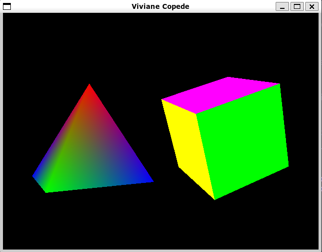
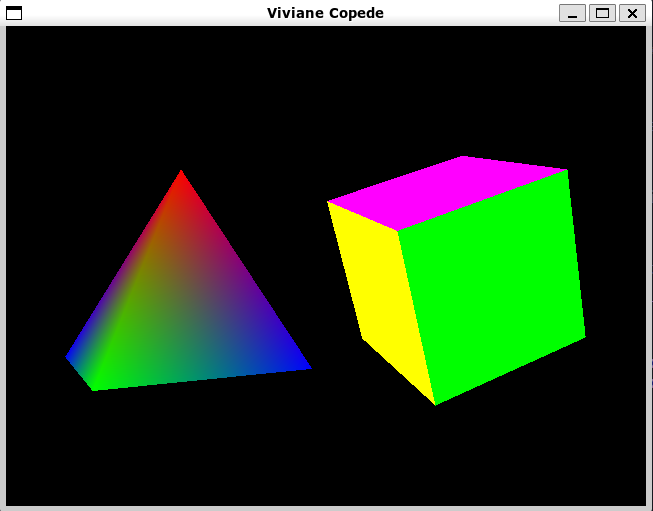

ESZI017-17SA - FPG - 2022.3
Fundamentos de Processamento Gráfico
Turma A1 - noturno
Integrantes da equipe
BRUNO ARAUJO SANTOS DO NASCIMENTO - 11201720606
LUIZ EDUARDO GRACINDO SILVA - 11201921251
MATHEUS VICTOR SOARES DE ARAUJO - 11201920270
VINICIUS SOUZA DE OLIVEIRA - 11201920654
VIVIANE COPEDE - 11201722075
Relatórios
Seminário S1 - TEMA
Nossa equipe pretende representar de forma didática o funcionamento de um átomo. Para a primeira entrega pensamos em representar algum modelo atômico e em seguida simular algum evento como fissão, fusão ou decaimento.
Lab01: OpenGL linux
Resumo dos passos que foram executados:
1) Configurar o ambiente:
- criar novo usuario com permissão de administrador no OS
- baixar as bibliotecas openGL e outras dependencias
- baixar o arquivo modelo do experimento
2) Compilar e executar o programa
- compilar o arquivo C
- executar o programa a partir do terminal com
- analisar as figuras geradas e comparar com o código do arquivo.
- printar algumas amostras.
Para fazer todos os passos seguimos o PDF disponibilizado no Moodle. Aqui no site não vamos colocar a parte de criação de um novo usuário admin porque é um processo especifico para os computadores da universidade.
Instalação
Após acessar o usuário admin podemos começar a instalação dos programas. Para isso devemos primeiro abrir o terminal usando o comando CTRL+SHIFT+T e digitar os seguintes comandos em ordem:
sudo apt-get update
sudo apt-get install build-essential
sudo apt upgrade
sudo apt-get install g++ freeglut3-dev buildessential libx11-dev
libxmu-dev libxi-dev libglu1-mesa libglu1-mesa-dev
sudo apt-get install geany
Compilar
Após instalar as libs podemos baixar o arquivo lesson5.cpp disponibilizado no Moodle e rodar o seguinte comando para compilar o programa:
gcc -o <your_file> <your_file>.cpp -lglut -lGL -lGLU
O arquivo compilado será gerado com o nome test que foi o que passamos no parametro -o rodando o seguinte comando:
./<your_file>
Execução


 

Análise e Conclusão
As figuras geradas são simples, porem, são importantes para
compreender o funcionamento básico de funções openGl e do fluxo de
renderização. Peguemos o exemplo do Cubo, com a funçao
glBegin(GL_QUADS) declaramos o inicio do desenho da forma, em
seguida a função glVertex3f() é chamada 4 vezes para definir
4 pontos no espaço 3D, formando uma área quadrada que é preenchida
com cor pela função glColor3f(). Assim para formar o cubo,
esse bloco de declarações é feito 6 vezes (1 para cada lado do cubo)
em que mudamos é apenas os parametros de posição no espaço 3D.
Concluindo, o que temos é um padrão na programação de figuras
simples que é replicavel para figuras mais complexas.
Lab02: Introdução à Estrutura de OpenGL
Exercício 1
A primeira coisa que tentamos para desenhar a primeira figura foi usar o comando GL_POLYGON, porém esse comando só funciona com polígonos convexos. Portanto, foi necessário desenhar a figura como combinação de tringulos e usar o comando GL_TRIANGLES. Para obter as coordenadas de cada triângulo criamos um desenho no site Geograb 2D
Para obter as coordenadas primeiro reproduzimos os pontos no Geogebra 2D e depois quebramos as figuras em 3 trinângulos como mostra a imagem a seguir.
Para encontrar a cor, usamos a ferramenta de color picker do Chrome e normalizamos a escala RGB para ficar entre 0 e 1 como exige o OpenGL.

O código final ficou assim:
glBegin(GL_TRIANGLES);
glColor3f(.89, 1.0, 1.0);
glVertex3f(0.13, 0.73, 0.0); // p1
glVertex3f(0.26, 0.33, 0.0); // p2
glVertex3f(0.54, 0.61, 0.0); // p5
glVertex3f(0.26, 0.33, 0.0); // p2
glVertex3f(0.95, 0.42, 0.0); // p3
glVertex3f(0.54, 0.61, 0.0); // p5
glVertex3f(0.95, 0.42, 0.0); // p3
glVertex3f(0.84, 0.88, 0.0); // p4
glVertex3f(0.54, 0.61, 0.0); // p5
glEnd();
O código completo pode ser encontrado no seguinte link: https://github.com/ufabc-processamento-grafico/ufabc_pagina_processamento_grafico/blob/main/labs/lab02/5.1.cpp
Resultado: